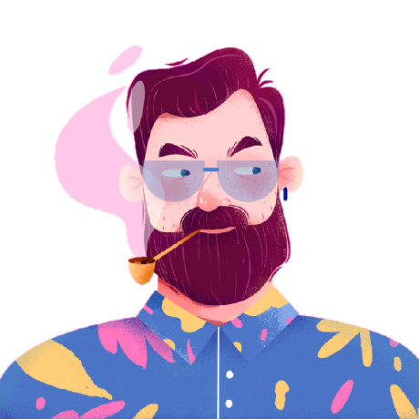
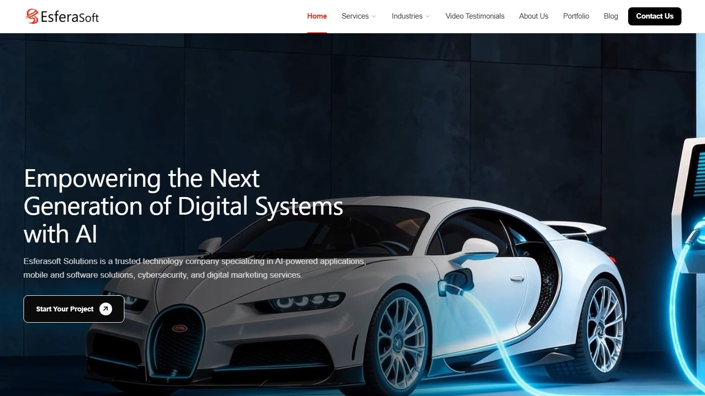
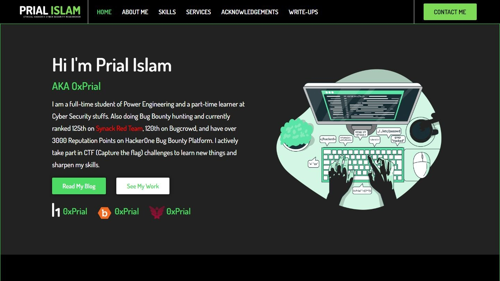
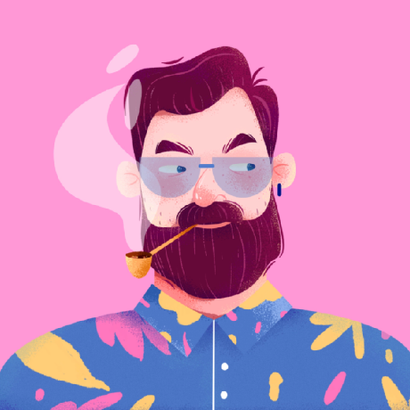
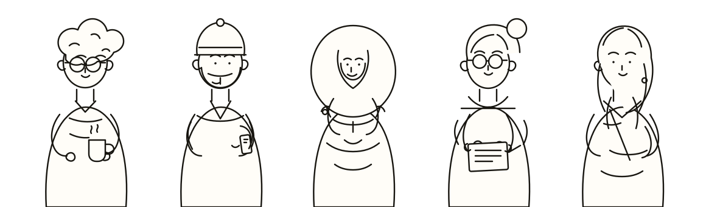

WordPress architecture
Custom themes, ACF content models, WooCommerce, and migrations — built for the people who update the site after me.
Hello, I'm Tamim.
I'm a web developer in Dhaka. I build, fix, and look after WordPress sites — the kind that have to work long after launch.

01 / Selected work
Four projects where the site had a real job to do — not just a launch.
2021 — 2026 / four picksAn investment bank site with reusable templates for services, insights, and team pages.

Portfolio, artists, training, and booking for a Dhaka tattoo studio.

A corporate service catalogue built on reusable components.

A personal site for a security researcher, designed and built in eight days.

02 / A little context
A developer in Dhaka, building and looking after WordPress sites since 2018.
I run QDesk IT and lead development on client projects — custom themes, content models, WooCommerce, migrations. The parts that decide whether a site is still easy to live with a year later.
I also co-founded Every Monday and Hosting Onion. Most of my work is quiet: security, performance, integrations, and the small fixes that keep a business online.
Good websites are less about the launch. More about what still works a year later.
QDesk IT Every Monday Hosting Onion
03 / How I help
The unglamorous parts, handled well.
Four ways I usually helpCustom themes, ACF content models, WooCommerce, and migrations — built for the people who update the site after me.
Malware cleanup, hardening, backups, and getting compromised sites back online without losing the evidence.
Caching, asset cleanup, and Core Web Vitals work — tested on mid-range phones, not just a fast laptop.
APIs, booking flows, CRMs, ongoing updates, and the small automations that keep a site useful.
Currently
QDesk ITEvery MondayHosting Onion
04 / Notes
Short, practical things I've learned while building and rescuing sites.
Follow via RSSThe first hour is mostly about not making things worse. The order I work in, from backups to rotating credentials.
Where Elementor helps, where it gets in the way, and why I still reach for ACF when content needs to be reused.
The things I check before blaming the host, and the order I check them in. A fast laptop is not the target.
05 / Say hello
A new build, a rescue, or a second opinion. Tell me what's broken — or what you want to make.
Usually replies within a business day.
A few of the people I build forsay hello ↑
